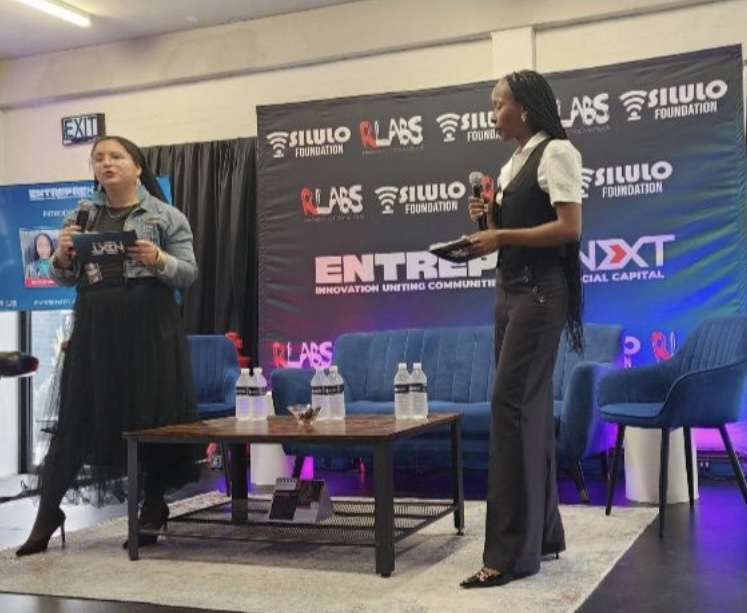
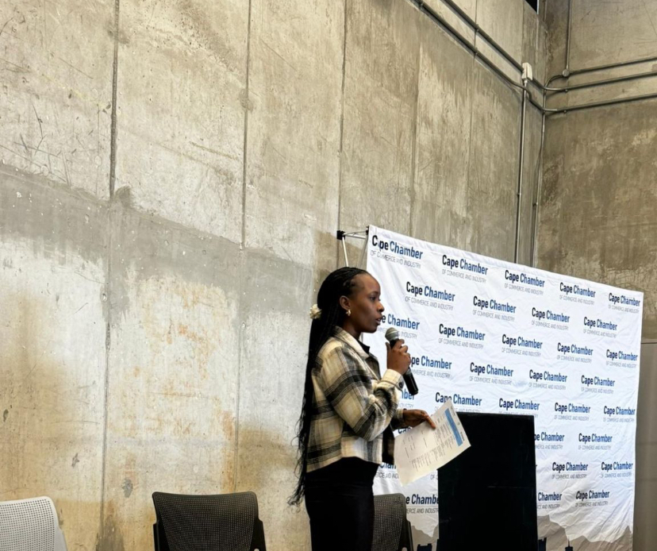
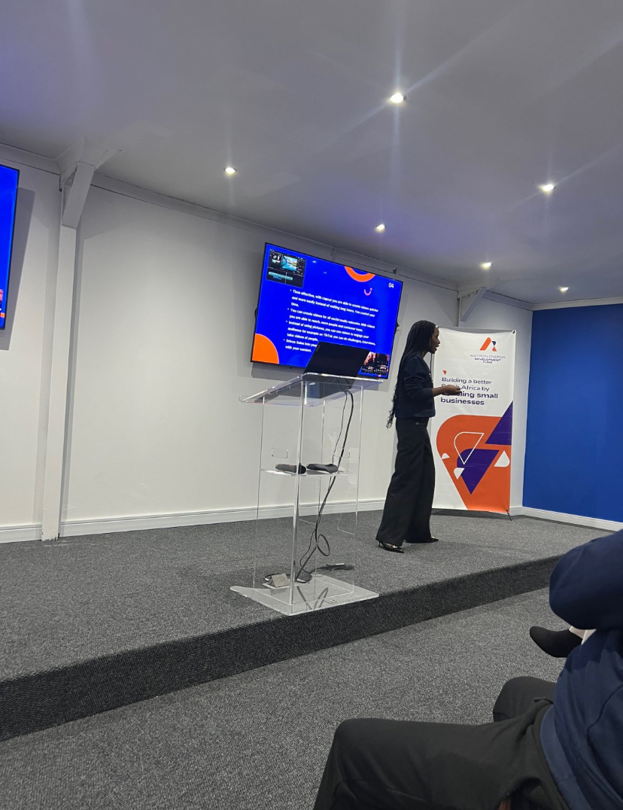

Entrepreneurship & ecosystem building
Building support systems that connect entrepreneurs with resources, funding, networks and practical opportunities—particularly in township economies.
I bring people together around entrepreneurship, business growth and digital skills—whether on stage as an MC, as a programme director, or in practical learning sessions.
My experience spans speaking at entrepreneurship ecosystem events, hosting programmes as MC, directing event programmes and facilitating digital skills workshops for entrepreneurs.

EntrepreNext · Event hostingBuilding support systems that connect entrepreneurs with resources, funding, networks and practical opportunities—particularly in township economies.
Helping entrepreneurs use accessible tools to create content, improve visibility and market their businesses.
Practical perspectives on positioning, systems, customer experience and turning ideas into structured businesses.

Participated in the event and programme facilitation for the Silulo Foundation and RLabs partnership, focused on strengthening the entrepreneurial ecosystem.

Hosted the relaunch event, guiding the programme and audience through discussions around access to finance and local business development.

Delivered a practical session on digital content creation and video editing for entrepreneurs.

Led the programme for two consecutive years and currently contributes to planning and stakeholder engagement for the event.
Available for MC engagements, programme direction, event facilitation, entrepreneurship discussions and digital skills workshops.